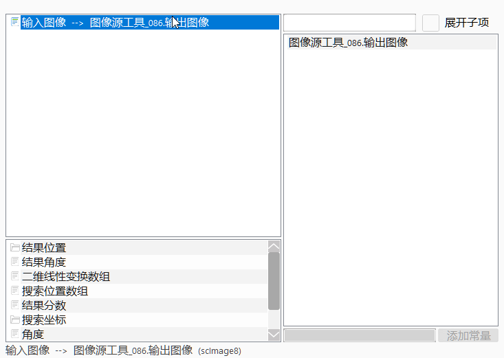
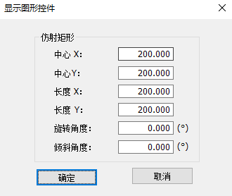
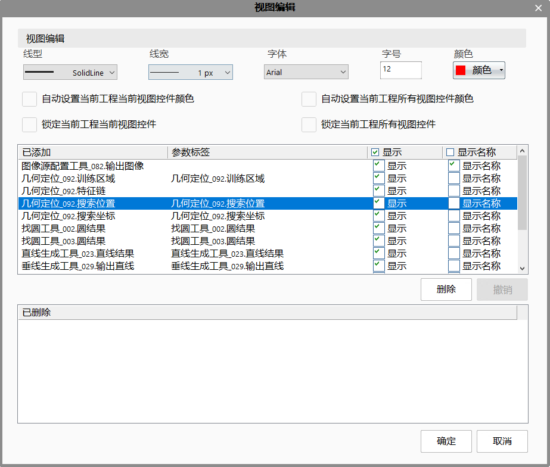

工具使用流程：添加工具→配置输入→设置参数→执行工具。
添加工具
工程栏流程图中右键新增；
工具箱中拖拽至流程图中；
配置工具的输入参数（双击工具）
如果流程图中此工具上方没有对应的输入参数类型（来自工具或变量），可手动添加或修改（支持通过关键字检索参数来源）。

设置GUI
可手动拖拽GUI进行调整；
可双击GUI，进行参数设置。
旋转角度(deg)：GUI旋转的角度；
倾斜角度(deg)：GUI仿射的角度；

编辑视图显示（前提：已有View视图）
添加显示：使用鼠标拖拽待显示的工具图元至对应的View视图界面中，弹出添加显示窗口，列出此工具支持显示的可图形化参数，勾选需要显示的内容即可
编辑显示内容：双击视图窗口。
支持删除、撤销编辑显示内容；
支持对GUI控件类内容进行显示线型、线宽、字体、字号、显示颜色的编辑；
自动设置当前视图颜色：当前视图中控件的颜色根据所属工具的执行结果显示红色或绿色，如果工具执行OK，则显示绿色，否则显示红色；
自动设置所有视图颜色：所有用户添加的视图中的控件都根据所属工具的执行结果显示红色或绿色，如果工具执行OK，则显示绿色，否则显示红色。
